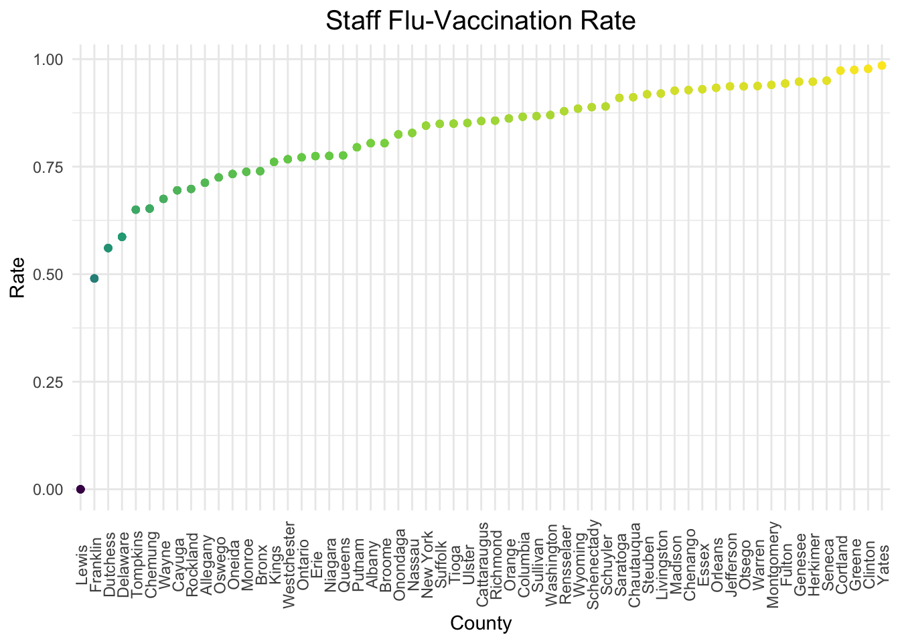
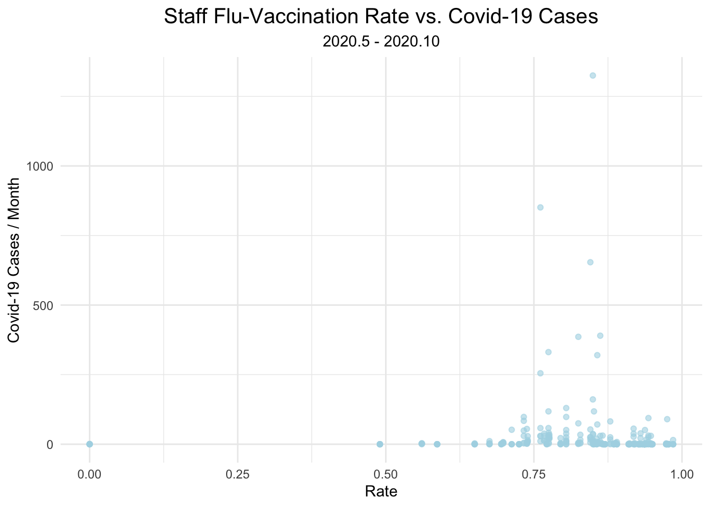

Fun Explorations
In this fun explorations section, we discuss two interesting topics:
1. What is the staff flu-vaccination rates in each county and how they may relate to the covid-19 confirmed cases in nursing homes each month according to the trend
2. How may election results relate to the Covid-19 outcomes in nursing homes?
Staff Flu-Vaccination Rates in Each County (overview)

We have collected nursing home employees’ flu-vaccination rates and use county as unit to make observations.
Following is an overview graph for each county:

We can observe that almost all counties’ nursing home have >50% flu-vaccination rate for their employees except for Lewis and Franklin county (The lewis county may have wrong data input in flu-vaccination rate). A big trunk of county have >75% flu-vaccination rate. Yates, Clinton, and Greene ranks 1 to 3 in flu-vaccination rate correspondingly.
Staff-Vaccination rate vs NH residents’ cases
We want to see the relationship between nursing home employees’ flu-vaccination rates and the Covid-19 confirmed cases each month. Here is the plot showing this relationship during 2020.5 to 2020.10:

As can see from the plot, most data points cluster in the bottom right corner, and as the flu-vaccination rate exceeds 87.5%, the confirmed covid-19 cases per month keeps stable under 125 cases. This may imply that higher employees’ flu-vaccination rate may have a protective effect from covid-19 infection, but further analysis is conducted in regression analysis. Please see the analysis section in the website.
How does election relate to the Covid-19 situations in nursing homes?